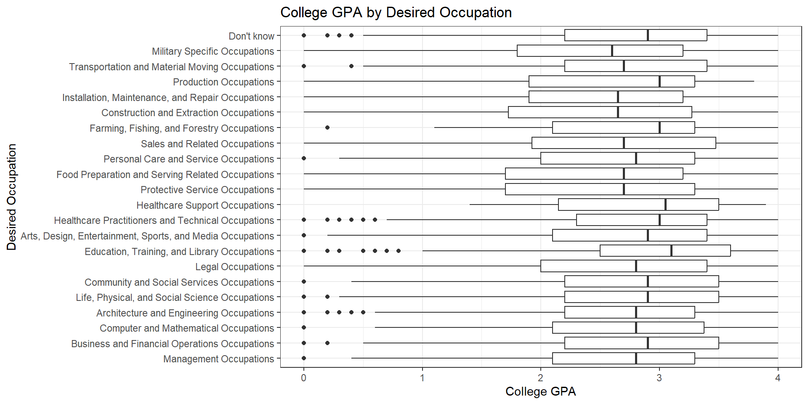
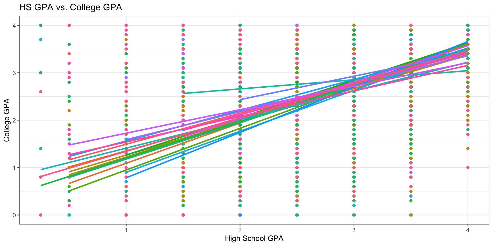
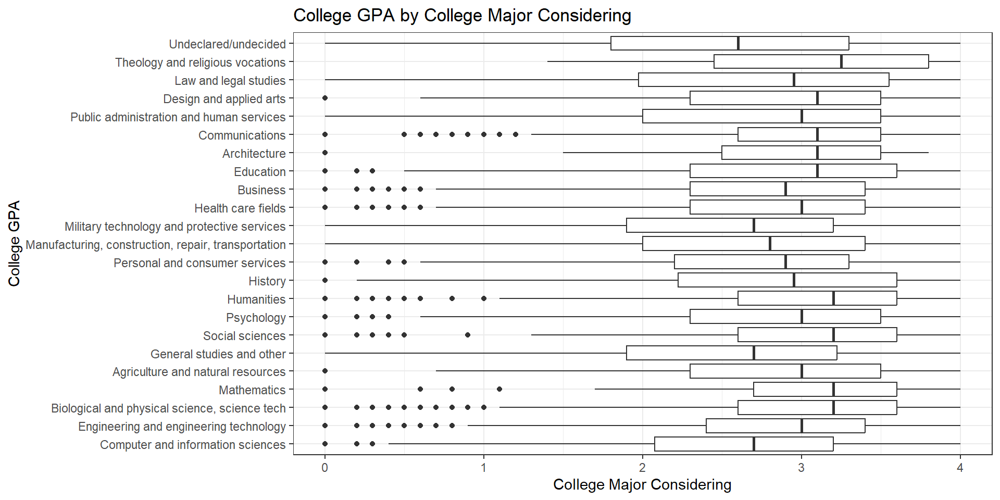
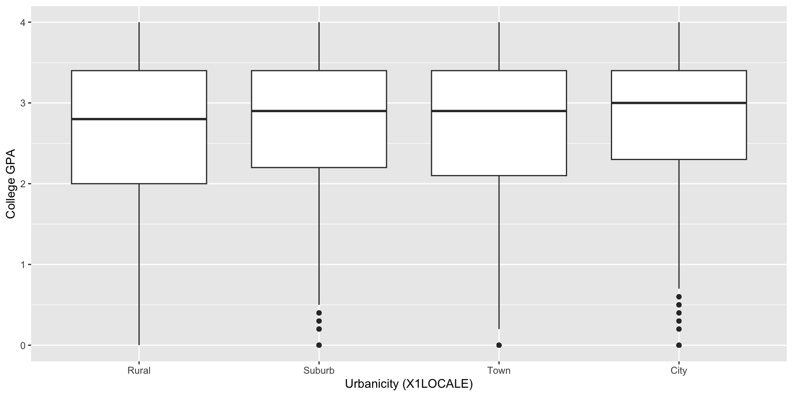
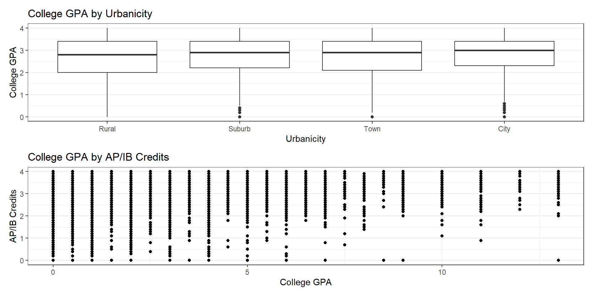
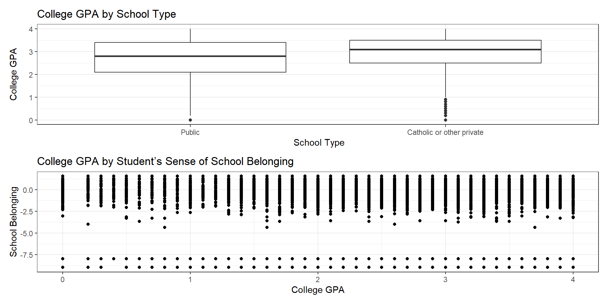
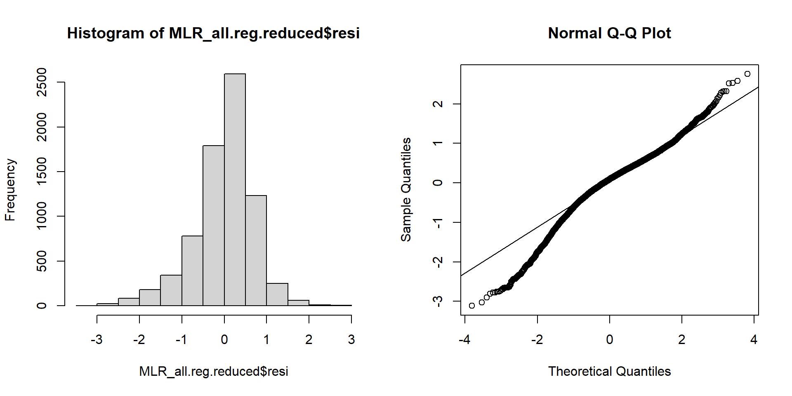

College_GPA HS_GPA
College_GPA 1.0000000 0.5630064
HS_GPA 0.5630064 1.0000000Career Choice and Academic Performance
Chris Cioffi, Kristina Frazier, Aidan Hennessy, Mike McHenry
Overview
- Introduction and Question
- Background and Related Literature
- Data
- Exploratory Analysis
- Modeling
- Diagnostic Tools
- Remedial Measures
- Conclusion
What Do You Want to Be When You Grow Up?
During high school, young adults are often asked to make decisions regarding post-secondary education that can have a profound and lasting impact on their lives in the future.
We investigate what factors in high school may be related to future academic performance.
Research Question: How is college GPA related to thoughts about prospective career path in high school? How are other characteristics about a student’s background and high school enviroment related to their college GPA?
Literature Review/Background
Data
- High School Longitudinal Study of 2009 (HSLS:09) from the National Center for Education Statistics.
- Interviewed 9th graders across the United States in 2009.
- Followed up with subjects in three subsequent interview rounds.
- Offers a variety of information on students, parents, and school.
Key Variables
Response Variable: College GPA
Primary Predictor of Interest: Desired occupation at age 30.
- A categorical variable with 22 occupation groups.
Additional predictors:
- Academic: High school GPA, credits earned for AP/IB courses, School engagement, Stem/non-stem desired occupation
- Geographic and Socioeconomic Factors: Family Income, High School urbanicity, High School type
A Look at Desired Occupation
Desired Occupation and Academic Performance
Model: Simple Linear Regression
Set reference group to those students who answered “Don’t Know”.
Model takes the form of \(College\_GPA = \beta_0 + \beta_1future\_job + \epsilon\).
Results: Simple Linear Regression
- Showing only results with a p-value < 0.10.
# A tibble: 7 × 5
term estimate std.error statistic p.value
<chr> <dbl> <dbl> <dbl> <dbl>
1 (Intercept) 2.72 0.0170 160. 0
2 Education, Training, and Library Occupat… 0.192 0.0454 4.24 2.28e-5
3 Arts, Design, Entertainment, Sports, and… -0.109 0.0303 -3.60 3.16e-4
4 Protective Service Occupations -0.317 0.0595 -5.33 1.00e-7
5 Food Preparation and Serving Related Occ… -0.329 0.0878 -3.75 1.79e-4
6 Installation, Maintenance, and Repair Oc… -0.271 0.104 -2.62 8.84e-3
7 Military Specific Occupations -0.358 0.0725 -4.94 8.08e-7- Adjusted \(R^2\) is less than 1%.
Additional Variables
Additional Variables
Additional Variables
Additional Variables
Multiple Linear Regression
Initial MLR Model: \[College\_GPA = \\ \beta_0 + \beta_1future\_job + \beta_2college\_gpa + \beta_3major\_considering + \\ \beta_4family\_income + \beta_5credits + \beta_6school\_type + \beta_7urbanicity + \\ \beta_8school\_belonging + \epsilon\]
- Adjusted \(R^2\): 0.3563
- F-statistic: 66.59 on 62 and 7286 DF, p-value: < 2.2e-16
Remove Urbanicity & School Belonging?
- Urbanicity (X1LOCALE): Betas for all 4 categories (City, Rural, Suburb, & Town) are insignificant at alpha = 0.10
- School Belonging (X1SCHOOLBEL): P-value for beta is 0.80
Lack of Fit Test
Null Hypothesis: \(\beta_7urbanicity\) = \(\beta_8school\_belonging\) = 0
Alternative hypothesis: either of the betas for these variables is a non-zero value
Use alpha = 0.10
Remove Urbanicity & School Belonging?
Analysis of Variance Table
Model 1: X5GPAALL ~ X1STU30OCC2 + X3TGPAACAD + X4ENTRYMAJ23 + X1FAMINCOME +
X3TCREDAPIB + X1CONTROL
Model 2: X5GPAALL ~ X1STU30OCC2 + X3TGPAACAD + X4ENTRYMAJ23 + X1LOCALE +
X1FAMINCOME + X3TCREDAPIB + X1CONTROL + X1SCHOOLBEL
Res.Df RSS Df Sum of Sq F Pr(>F)
1 7290 3608.0
2 7286 3605.7 4 2.2764 1.15 0.331P-value of 0.331, confirms insufficient evidence to reject the null hypothesis that the values for the betas of these two predictors are not zero.
In any case, the lack of significant relationship between Urbanicity & School Belonging was previously seen in earlier plots as well
Variable Selection
New MLR Model: \[College\_GPA = \\ \beta_0 + \beta_1future\_job + \beta_2college\_gpa + \beta_3major\_considering + \\ \beta_4family\_income + \beta_5credits + \beta_6school\_type + \epsilon\]
Stepwise selection did not remove additional variables
Start: AIC=-5110.25
X5GPAALL ~ X1STU30OCC2 + X3TGPAACAD + X4ENTRYMAJ23 + X1FAMINCOME +
X3TCREDAPIB + X1CONTROL
Df Sum of Sq RSS AIC
<none> 3608.0 -5110.2
- X1CONTROL 1 9.22 3617.2 -5093.5
- X1FAMINCOME 12 21.53 3629.5 -5090.5
- X4ENTRYMAJ23 22 54.19 3662.1 -5044.7
- X3TCREDAPIB 1 35.54 3643.5 -5040.2
- X3TGPAACAD 1 1225.29 4833.2 -2963.6
Call:
lm(formula = X5GPAALL ~ X1STU30OCC2 + X3TGPAACAD + X4ENTRYMAJ23 +
X1FAMINCOME + X3TCREDAPIB + X1CONTROL, data = MLR_all)
Coefficients:
(Intercept)
0.4541565
X1STU30OCC2Management Occupations
0.0153304
X1STU30OCC2Business and Financial Operations Occupations
0.0782835
X1STU30OCC2Computer and Mathematical Occupations
-0.0370277
X1STU30OCC2Architecture and Engineering Occupations
-0.0585375
X1STU30OCC2Life, Physical, and Social Science Occupations
-0.0304988
X1STU30OCC2Community and Social Services Occupations
0.1392815
X1STU30OCC2Legal Occupations
-0.0737682
X1STU30OCC2Education, Training, and Library Occupations
0.0670447
X1STU30OCC2Arts, Design, Entertainment, Sports, and Media Occupations
-0.0050668
X1STU30OCC2Healthcare Practitioners and Technical Occupations
-0.0302980
X1STU30OCC2Healthcare Support Occupations
0.0869059
X1STU30OCC2Protective Service Occupations
-0.0524724
X1STU30OCC2Food Preparation and Serving Related Occupations
-0.2356375
X1STU30OCC2Personal Care and Service Occupations
0.0982343
X1STU30OCC2Sales and Related Occupations
0.0434307
X1STU30OCC2Farming, Fishing, and Forestry Occupations
0.1171752
X1STU30OCC2Construction and Extraction Occupations
0.0705477
X1STU30OCC2Installation, Maintenance, and Repair Occupations
0.1269173
X1STU30OCC2Production Occupations
0.1494096
X1STU30OCC2Transportation and Material Moving Occupations
0.1271622
X1STU30OCC2Military Specific Occupations
-0.1665261
X3TGPAACAD
0.6807046
X4ENTRYMAJ23Computer and information sciences
-0.0041207
X4ENTRYMAJ23Engineering and engineering technology
0.0002693
X4ENTRYMAJ23Biological and physical science, science tech
0.0805061
X4ENTRYMAJ23Mathematics
0.0729173
X4ENTRYMAJ23Agriculture and natural resources
0.1474664
X4ENTRYMAJ23General studies and other
0.1499260
X4ENTRYMAJ23Social sciences
0.1688093
X4ENTRYMAJ23Psychology
0.1377309
X4ENTRYMAJ23Humanities
0.2607402
X4ENTRYMAJ23History
0.1475859
X4ENTRYMAJ23Personal and consumer services
0.1386387
X4ENTRYMAJ23Manufacturing, construction, repair, transportation
0.4337423
X4ENTRYMAJ23Military technology and protective services
0.1482326
X4ENTRYMAJ23Health care fields
0.1591009
X4ENTRYMAJ23Business
0.1194903
X4ENTRYMAJ23Education
0.2294671
X4ENTRYMAJ23Architecture
0.2198331
X4ENTRYMAJ23Communications
0.2830411
X4ENTRYMAJ23Public administration and human services
0.1670796
X4ENTRYMAJ23Design and applied arts
0.2517047
X4ENTRYMAJ23Law and legal studies
0.2328264
X4ENTRYMAJ23Theology and religious vocations
0.3499678
X1FAMINCOMEFamily income > $15,000 and <= $35,000
0.0097161
X1FAMINCOMEFamily income > $35,000 and <= $55,000
0.0542806
X1FAMINCOMEFamily income > $55,000 and <= $75,000
0.1061207
X1FAMINCOMEFamily income > $75,000 and <= $95,000
0.0811145
X1FAMINCOMEFamily income > $95,000 and <= $115,000
0.1507057
X1FAMINCOMEFamily income > $115,000 and <= $135,000
0.1707281
X1FAMINCOMEFamily income > $135,000 and <= $155,000
0.1262002
X1FAMINCOMEFamily income > $155,000 and <=$175,000
0.0952562
X1FAMINCOMEFamily income > $175,000 and <= $195,000
0.1803418
X1FAMINCOMEFamily income > $195,000 and <= $215,000
0.2102978
X1FAMINCOMEFamily income > $215,000 and <= $235,000
0.1432016
X1FAMINCOMEFamily income > $235,000
0.1595624
X3TCREDAPIB
0.0292806
X1CONTROLCatholic or other private
0.0861247 - Stepwise selection did not remove additional variables
Diagnostics
Linearity
- F-statistic: 71.1 on 58 and 7290 DF, p-value: < 2.2e-16
Call:
lm(formula = X5GPAALL ~ X1STU30OCC2 + X3TGPAACAD + X4ENTRYMAJ23 +
X1FAMINCOME + X3TCREDAPIB + X1CONTROL, data = MLR_all)
Residuals:
Min 1Q Median 3Q Max
-3.11365 -0.34477 0.09234 0.43827 2.75491
Coefficients:
Estimate
(Intercept) 0.4541565
X1STU30OCC2Management Occupations 0.0153304
X1STU30OCC2Business and Financial Operations Occupations 0.0782835
X1STU30OCC2Computer and Mathematical Occupations -0.0370277
X1STU30OCC2Architecture and Engineering Occupations -0.0585375
X1STU30OCC2Life, Physical, and Social Science Occupations -0.0304988
X1STU30OCC2Community and Social Services Occupations 0.1392815
X1STU30OCC2Legal Occupations -0.0737682
X1STU30OCC2Education, Training, and Library Occupations 0.0670447
X1STU30OCC2Arts, Design, Entertainment, Sports, and Media Occupations -0.0050668
X1STU30OCC2Healthcare Practitioners and Technical Occupations -0.0302980
X1STU30OCC2Healthcare Support Occupations 0.0869059
X1STU30OCC2Protective Service Occupations -0.0524724
X1STU30OCC2Food Preparation and Serving Related Occupations -0.2356375
X1STU30OCC2Personal Care and Service Occupations 0.0982343
X1STU30OCC2Sales and Related Occupations 0.0434307
X1STU30OCC2Farming, Fishing, and Forestry Occupations 0.1171752
X1STU30OCC2Construction and Extraction Occupations 0.0705477
X1STU30OCC2Installation, Maintenance, and Repair Occupations 0.1269173
X1STU30OCC2Production Occupations 0.1494096
X1STU30OCC2Transportation and Material Moving Occupations 0.1271622
X1STU30OCC2Military Specific Occupations -0.1665261
X3TGPAACAD 0.6807046
X4ENTRYMAJ23Computer and information sciences -0.0041207
X4ENTRYMAJ23Engineering and engineering technology 0.0002693
X4ENTRYMAJ23Biological and physical science, science tech 0.0805061
X4ENTRYMAJ23Mathematics 0.0729173
X4ENTRYMAJ23Agriculture and natural resources 0.1474664
X4ENTRYMAJ23General studies and other 0.1499260
X4ENTRYMAJ23Social sciences 0.1688093
X4ENTRYMAJ23Psychology 0.1377309
X4ENTRYMAJ23Humanities 0.2607402
X4ENTRYMAJ23History 0.1475859
X4ENTRYMAJ23Personal and consumer services 0.1386387
X4ENTRYMAJ23Manufacturing, construction, repair, transportation 0.4337423
X4ENTRYMAJ23Military technology and protective services 0.1482326
X4ENTRYMAJ23Health care fields 0.1591009
X4ENTRYMAJ23Business 0.1194903
X4ENTRYMAJ23Education 0.2294671
X4ENTRYMAJ23Architecture 0.2198331
X4ENTRYMAJ23Communications 0.2830411
X4ENTRYMAJ23Public administration and human services 0.1670796
X4ENTRYMAJ23Design and applied arts 0.2517047
X4ENTRYMAJ23Law and legal studies 0.2328264
X4ENTRYMAJ23Theology and religious vocations 0.3499678
X1FAMINCOMEFamily income > $15,000 and <= $35,000 0.0097161
X1FAMINCOMEFamily income > $35,000 and <= $55,000 0.0542806
X1FAMINCOMEFamily income > $55,000 and <= $75,000 0.1061207
X1FAMINCOMEFamily income > $75,000 and <= $95,000 0.0811145
X1FAMINCOMEFamily income > $95,000 and <= $115,000 0.1507057
X1FAMINCOMEFamily income > $115,000 and <= $135,000 0.1707281
X1FAMINCOMEFamily income > $135,000 and <= $155,000 0.1262002
X1FAMINCOMEFamily income > $155,000 and <=$175,000 0.0952562
X1FAMINCOMEFamily income > $175,000 and <= $195,000 0.1803418
X1FAMINCOMEFamily income > $195,000 and <= $215,000 0.2102978
X1FAMINCOMEFamily income > $215,000 and <= $235,000 0.1432016
X1FAMINCOMEFamily income > $235,000 0.1595624
X3TCREDAPIB 0.0292806
X1CONTROLCatholic or other private 0.0861247
Std. Error
(Intercept) 0.0618736
X1STU30OCC2Management Occupations 0.0575649
X1STU30OCC2Business and Financial Operations Occupations 0.0717997
X1STU30OCC2Computer and Mathematical Occupations 0.0645507
X1STU30OCC2Architecture and Engineering Occupations 0.0374192
X1STU30OCC2Life, Physical, and Social Science Occupations 0.0369491
X1STU30OCC2Community and Social Services Occupations 0.0866033
X1STU30OCC2Legal Occupations 0.0430488
X1STU30OCC2Education, Training, and Library Occupations 0.0419590
X1STU30OCC2Arts, Design, Entertainment, Sports, and Media Occupations 0.0290267
X1STU30OCC2Healthcare Practitioners and Technical Occupations 0.0236654
X1STU30OCC2Healthcare Support Occupations 0.2132309
X1STU30OCC2Protective Service Occupations 0.0596469
X1STU30OCC2Food Preparation and Serving Related Occupations 0.0864662
X1STU30OCC2Personal Care and Service Occupations 0.0832071
X1STU30OCC2Sales and Related Occupations 0.1296512
X1STU30OCC2Farming, Fishing, and Forestry Occupations 0.2244406
X1STU30OCC2Construction and Extraction Occupations 0.1517391
X1STU30OCC2Installation, Maintenance, and Repair Occupations 0.1039421
X1STU30OCC2Production Occupations 0.1767864
X1STU30OCC2Transportation and Material Moving Occupations 0.1132055
X1STU30OCC2Military Specific Occupations 0.0686630
X3TGPAACAD 0.0136806
X4ENTRYMAJ23Computer and information sciences 0.0569549
X4ENTRYMAJ23Engineering and engineering technology 0.0469181
X4ENTRYMAJ23Biological and physical science, science tech 0.0450795
X4ENTRYMAJ23Mathematics 0.0965082
X4ENTRYMAJ23Agriculture and natural resources 0.0708381
X4ENTRYMAJ23General studies and other 0.0700379
X4ENTRYMAJ23Social sciences 0.0589234
X4ENTRYMAJ23Psychology 0.0548070
X4ENTRYMAJ23Humanities 0.0522431
X4ENTRYMAJ23History 0.0951975
X4ENTRYMAJ23Personal and consumer services 0.0608408
X4ENTRYMAJ23Manufacturing, construction, repair, transportation 0.0726747
X4ENTRYMAJ23Military technology and protective services 0.0581589
X4ENTRYMAJ23Health care fields 0.0424604
X4ENTRYMAJ23Business 0.0434976
X4ENTRYMAJ23Education 0.0506218
X4ENTRYMAJ23Architecture 0.1211585
X4ENTRYMAJ23Communications 0.0602309
X4ENTRYMAJ23Public administration and human services 0.0927785
X4ENTRYMAJ23Design and applied arts 0.0832168
X4ENTRYMAJ23Law and legal studies 0.1223645
X4ENTRYMAJ23Theology and religious vocations 0.1661350
X1FAMINCOMEFamily income > $15,000 and <= $35,000 0.0424455
X1FAMINCOMEFamily income > $35,000 and <= $55,000 0.0416326
X1FAMINCOMEFamily income > $55,000 and <= $75,000 0.0416099
X1FAMINCOMEFamily income > $75,000 and <= $95,000 0.0425920
X1FAMINCOMEFamily income > $95,000 and <= $115,000 0.0438472
X1FAMINCOMEFamily income > $115,000 and <= $135,000 0.0467359
X1FAMINCOMEFamily income > $135,000 and <= $155,000 0.0492487
X1FAMINCOMEFamily income > $155,000 and <=$175,000 0.0596338
X1FAMINCOMEFamily income > $175,000 and <= $195,000 0.0714790
X1FAMINCOMEFamily income > $195,000 and <= $215,000 0.0635681
X1FAMINCOMEFamily income > $215,000 and <= $235,000 0.0904840
X1FAMINCOMEFamily income > $235,000 0.0503627
X3TCREDAPIB 0.0034555
X1CONTROLCatholic or other private 0.0199546
t value
(Intercept) 7.340
X1STU30OCC2Management Occupations 0.266
X1STU30OCC2Business and Financial Operations Occupations 1.090
X1STU30OCC2Computer and Mathematical Occupations -0.574
X1STU30OCC2Architecture and Engineering Occupations -1.564
X1STU30OCC2Life, Physical, and Social Science Occupations -0.825
X1STU30OCC2Community and Social Services Occupations 1.608
X1STU30OCC2Legal Occupations -1.714
X1STU30OCC2Education, Training, and Library Occupations 1.598
X1STU30OCC2Arts, Design, Entertainment, Sports, and Media Occupations -0.175
X1STU30OCC2Healthcare Practitioners and Technical Occupations -1.280
X1STU30OCC2Healthcare Support Occupations 0.408
X1STU30OCC2Protective Service Occupations -0.880
X1STU30OCC2Food Preparation and Serving Related Occupations -2.725
X1STU30OCC2Personal Care and Service Occupations 1.181
X1STU30OCC2Sales and Related Occupations 0.335
X1STU30OCC2Farming, Fishing, and Forestry Occupations 0.522
X1STU30OCC2Construction and Extraction Occupations 0.465
X1STU30OCC2Installation, Maintenance, and Repair Occupations 1.221
X1STU30OCC2Production Occupations 0.845
X1STU30OCC2Transportation and Material Moving Occupations 1.123
X1STU30OCC2Military Specific Occupations -2.425
X3TGPAACAD 49.757
X4ENTRYMAJ23Computer and information sciences -0.072
X4ENTRYMAJ23Engineering and engineering technology 0.006
X4ENTRYMAJ23Biological and physical science, science tech 1.786
X4ENTRYMAJ23Mathematics 0.756
X4ENTRYMAJ23Agriculture and natural resources 2.082
X4ENTRYMAJ23General studies and other 2.141
X4ENTRYMAJ23Social sciences 2.865
X4ENTRYMAJ23Psychology 2.513
X4ENTRYMAJ23Humanities 4.991
X4ENTRYMAJ23History 1.550
X4ENTRYMAJ23Personal and consumer services 2.279
X4ENTRYMAJ23Manufacturing, construction, repair, transportation 5.968
X4ENTRYMAJ23Military technology and protective services 2.549
X4ENTRYMAJ23Health care fields 3.747
X4ENTRYMAJ23Business 2.747
X4ENTRYMAJ23Education 4.533
X4ENTRYMAJ23Architecture 1.814
X4ENTRYMAJ23Communications 4.699
X4ENTRYMAJ23Public administration and human services 1.801
X4ENTRYMAJ23Design and applied arts 3.025
X4ENTRYMAJ23Law and legal studies 1.903
X4ENTRYMAJ23Theology and religious vocations 2.107
X1FAMINCOMEFamily income > $15,000 and <= $35,000 0.229
X1FAMINCOMEFamily income > $35,000 and <= $55,000 1.304
X1FAMINCOMEFamily income > $55,000 and <= $75,000 2.550
X1FAMINCOMEFamily income > $75,000 and <= $95,000 1.904
X1FAMINCOMEFamily income > $95,000 and <= $115,000 3.437
X1FAMINCOMEFamily income > $115,000 and <= $135,000 3.653
X1FAMINCOMEFamily income > $135,000 and <= $155,000 2.563
X1FAMINCOMEFamily income > $155,000 and <=$175,000 1.597
X1FAMINCOMEFamily income > $175,000 and <= $195,000 2.523
X1FAMINCOMEFamily income > $195,000 and <= $215,000 3.308
X1FAMINCOMEFamily income > $215,000 and <= $235,000 1.583
X1FAMINCOMEFamily income > $235,000 3.168
X3TCREDAPIB 8.474
X1CONTROLCatholic or other private 4.316
Pr(>|t|)
(Intercept) 2.37e-13
X1STU30OCC2Management Occupations 0.790004
X1STU30OCC2Business and Financial Operations Occupations 0.275615
X1STU30OCC2Computer and Mathematical Occupations 0.566241
X1STU30OCC2Architecture and Engineering Occupations 0.117775
X1STU30OCC2Life, Physical, and Social Science Occupations 0.409157
X1STU30OCC2Community and Social Services Occupations 0.107820
X1STU30OCC2Legal Occupations 0.086646
X1STU30OCC2Education, Training, and Library Occupations 0.110117
X1STU30OCC2Arts, Design, Entertainment, Sports, and Media Occupations 0.861432
X1STU30OCC2Healthcare Practitioners and Technical Occupations 0.200493
X1STU30OCC2Healthcare Support Occupations 0.683603
X1STU30OCC2Protective Service Occupations 0.379042
X1STU30OCC2Food Preparation and Serving Related Occupations 0.006442
X1STU30OCC2Personal Care and Service Occupations 0.237801
X1STU30OCC2Sales and Related Occupations 0.737649
X1STU30OCC2Farming, Fishing, and Forestry Occupations 0.601633
X1STU30OCC2Construction and Extraction Occupations 0.641997
X1STU30OCC2Installation, Maintenance, and Repair Occupations 0.222111
X1STU30OCC2Production Occupations 0.398059
X1STU30OCC2Transportation and Material Moving Occupations 0.261353
X1STU30OCC2Military Specific Occupations 0.015321
X3TGPAACAD < 2e-16
X4ENTRYMAJ23Computer and information sciences 0.942325
X4ENTRYMAJ23Engineering and engineering technology 0.995420
X4ENTRYMAJ23Biological and physical science, science tech 0.074162
X4ENTRYMAJ23Mathematics 0.449940
X4ENTRYMAJ23Agriculture and natural resources 0.037401
X4ENTRYMAJ23General studies and other 0.032336
X4ENTRYMAJ23Social sciences 0.004183
X4ENTRYMAJ23Psychology 0.011992
X4ENTRYMAJ23Humanities 6.15e-07
X4ENTRYMAJ23History 0.121110
X4ENTRYMAJ23Personal and consumer services 0.022713
X4ENTRYMAJ23Manufacturing, construction, repair, transportation 2.51e-09
X4ENTRYMAJ23Military technology and protective services 0.010831
X4ENTRYMAJ23Health care fields 0.000180
X4ENTRYMAJ23Business 0.006028
X4ENTRYMAJ23Education 5.91e-06
X4ENTRYMAJ23Architecture 0.069653
X4ENTRYMAJ23Communications 2.66e-06
X4ENTRYMAJ23Public administration and human services 0.071769
X4ENTRYMAJ23Design and applied arts 0.002498
X4ENTRYMAJ23Law and legal studies 0.057115
X4ENTRYMAJ23Theology and religious vocations 0.035193
X1FAMINCOMEFamily income > $15,000 and <= $35,000 0.818947
X1FAMINCOMEFamily income > $35,000 and <= $55,000 0.192342
X1FAMINCOMEFamily income > $55,000 and <= $75,000 0.010781
X1FAMINCOMEFamily income > $75,000 and <= $95,000 0.056891
X1FAMINCOMEFamily income > $95,000 and <= $115,000 0.000591
X1FAMINCOMEFamily income > $115,000 and <= $135,000 0.000261
X1FAMINCOMEFamily income > $135,000 and <= $155,000 0.010412
X1FAMINCOMEFamily income > $155,000 and <=$175,000 0.110231
X1FAMINCOMEFamily income > $175,000 and <= $195,000 0.011657
X1FAMINCOMEFamily income > $195,000 and <= $215,000 0.000943
X1FAMINCOMEFamily income > $215,000 and <= $235,000 0.113552
X1FAMINCOMEFamily income > $235,000 0.001540
X3TCREDAPIB < 2e-16
X1CONTROLCatholic or other private 1.61e-05
(Intercept) ***
X1STU30OCC2Management Occupations
X1STU30OCC2Business and Financial Operations Occupations
X1STU30OCC2Computer and Mathematical Occupations
X1STU30OCC2Architecture and Engineering Occupations
X1STU30OCC2Life, Physical, and Social Science Occupations
X1STU30OCC2Community and Social Services Occupations
X1STU30OCC2Legal Occupations .
X1STU30OCC2Education, Training, and Library Occupations
X1STU30OCC2Arts, Design, Entertainment, Sports, and Media Occupations
X1STU30OCC2Healthcare Practitioners and Technical Occupations
X1STU30OCC2Healthcare Support Occupations
X1STU30OCC2Protective Service Occupations
X1STU30OCC2Food Preparation and Serving Related Occupations **
X1STU30OCC2Personal Care and Service Occupations
X1STU30OCC2Sales and Related Occupations
X1STU30OCC2Farming, Fishing, and Forestry Occupations
X1STU30OCC2Construction and Extraction Occupations
X1STU30OCC2Installation, Maintenance, and Repair Occupations
X1STU30OCC2Production Occupations
X1STU30OCC2Transportation and Material Moving Occupations
X1STU30OCC2Military Specific Occupations *
X3TGPAACAD ***
X4ENTRYMAJ23Computer and information sciences
X4ENTRYMAJ23Engineering and engineering technology
X4ENTRYMAJ23Biological and physical science, science tech .
X4ENTRYMAJ23Mathematics
X4ENTRYMAJ23Agriculture and natural resources *
X4ENTRYMAJ23General studies and other *
X4ENTRYMAJ23Social sciences **
X4ENTRYMAJ23Psychology *
X4ENTRYMAJ23Humanities ***
X4ENTRYMAJ23History
X4ENTRYMAJ23Personal and consumer services *
X4ENTRYMAJ23Manufacturing, construction, repair, transportation ***
X4ENTRYMAJ23Military technology and protective services *
X4ENTRYMAJ23Health care fields ***
X4ENTRYMAJ23Business **
X4ENTRYMAJ23Education ***
X4ENTRYMAJ23Architecture .
X4ENTRYMAJ23Communications ***
X4ENTRYMAJ23Public administration and human services .
X4ENTRYMAJ23Design and applied arts **
X4ENTRYMAJ23Law and legal studies .
X4ENTRYMAJ23Theology and religious vocations *
X1FAMINCOMEFamily income > $15,000 and <= $35,000
X1FAMINCOMEFamily income > $35,000 and <= $55,000
X1FAMINCOMEFamily income > $55,000 and <= $75,000 *
X1FAMINCOMEFamily income > $75,000 and <= $95,000 .
X1FAMINCOMEFamily income > $95,000 and <= $115,000 ***
X1FAMINCOMEFamily income > $115,000 and <= $135,000 ***
X1FAMINCOMEFamily income > $135,000 and <= $155,000 *
X1FAMINCOMEFamily income > $155,000 and <=$175,000
X1FAMINCOMEFamily income > $175,000 and <= $195,000 *
X1FAMINCOMEFamily income > $195,000 and <= $215,000 ***
X1FAMINCOMEFamily income > $215,000 and <= $235,000
X1FAMINCOMEFamily income > $235,000 **
X3TCREDAPIB ***
X1CONTROLCatholic or other private ***
---
Signif. codes: 0 '***' 0.001 '**' 0.01 '*' 0.05 '.' 0.1 ' ' 1
Residual standard error: 0.7035 on 7290 degrees of freedom
Multiple R-squared: 0.3613, Adjusted R-squared: 0.3562
F-statistic: 71.1 on 58 and 7290 DF, p-value: < 2.2e-16Diagnostics
Constant Variance
Very obvious pattern here

Diagnostics:
Normality
Remedial Measures
- Need to address non-constant variance first, and then recheck normality assumption
MLR Results
Slide for Additional Ideas
- If our model assumptions are violated we could try bootstrapping or quantile regression?